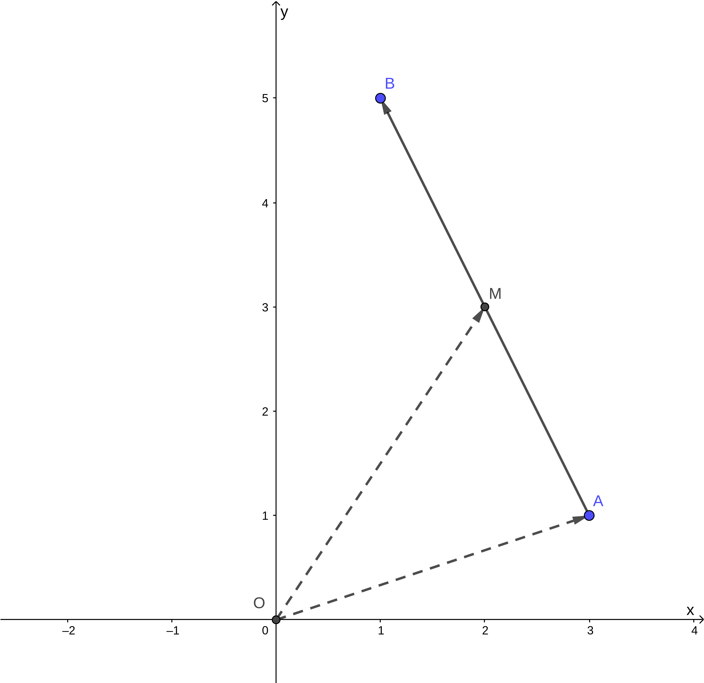
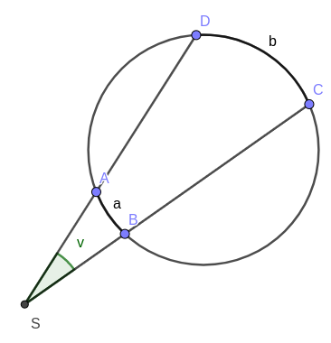
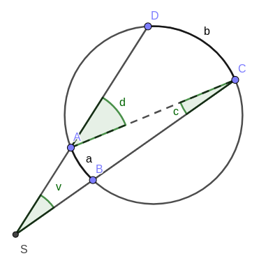
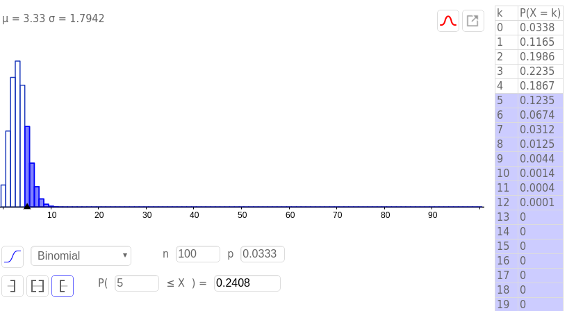

Matemamtikk R1 - økter 2018-19
uke 4
Vurdering mandag
Skalarproduktet torsdag
Regneregler for skalarproduktet torsdag
Mer om lengder og vinkler torsdag
uke 3
Sirkellikningen mandag
Om vi har to punkter, \((x_1, y_1)\) og \((x_2, y_2)\), kan vi finne avstanden, \(d\), mellom disse som \[d = \sqrt{(x_1 - x_2)^2 + (y_1 - y_2)^2}.\]
La oss for enkelhets skyld la det ene punktet være origo, vi får da at avstanden fra origo til et vilkårlig punkt \((x, y)\) blir \[d = \sqrt{(x - 0)^2 + (y - 0)^2} = \sqrt{x^2 + y^2}.\]
De $x$- og $y$-verdiene som oppfyller likningen over, er altså alle punktene som har en gitt avstand \(d\) fra origo. Dette er definisjonen på en sirkel. En sirkel er nettopp alle punkter som har en gitt avstand fra et senter, og vi kaller da denne avstanden for sirkelens radius. Om vi da bytter ut \(d\) med \(r\), for radius, og opphøyer begge sider i andre, for å slippe kvadratroten, får vi \[r^2 = x^2 + y^2.\]
Dersom vi nå ønsker å finne likningen for en sirkel som ikke har senter i origo, men i \(S(x_0, y_0)\), får vi da \[r^2 = (x - x_0)^2 + (y - y_0)^2.\]
Legg merke til at dette er alle punkter \((x, y)\) som har en avstand \(r\) fra et senter i \((x_0, y_0)\). Jeg forsøker å vise dette i Geogebra-feltet under. Du kan laste ned geogebrafila her.
Sirkelen som grafen til to funksjoner mandag
Parallelle vektorer i koordinatsystemet torsdag
Parameterfremstillinger torsdag
Parallelle vektorer uten koordinater torsdag
uke 2
Regning med vektorkoordinater
Eksempel 1
La \(\vec{u} = [2, 3]\) og \(\vec{v} = [4,-1]\).
a Finn \(\vec{u}-\vec{v}\) ved regning. b Finn \(\vec{u}-\vec{v}\) ved tegning.
Eksempel 2
La \(\vec{a}=[-2, 4]\), \(\vec{b}=[3,-1]\) og \(\vec{v}=[x,y]\).
Finn \(x\) og \(y\) slik at \[2\vec{v} - 4\vec{a} = 6\vec{b}.\]
Vektoren mellom to punkter torsdag
Overkomplisering
Vær obs på at vi noen ganger har en tendens til å overkomplisere litt. La oss se på eksempelet på side 204 i boka.
Boka Punktene \(A(3, 1)\) og \(B(1,5)\) er gitt. Finn koordinatene til midtpunktet \(M\) på \(AB\).
Figuren er fra denne Geogebra-fila
Løsning Her er \[\vec{AB} = \left[1-3, 5-1\right] = \left[-2, 4\right]\] Ettersom \(M\) ligger midt på \(AB\), har \(\vec{AM}\) samme retning som \(\vec{AB}\), men bare halve lengden. Det gir \[\vec{AM}=\frac{1}{2}\cdot \vec{AB}=\frac{1}{2}\cdot\left[-2, 4\right]=\left[-1, 2\right]\] La \(O\) være origo i koordinatsystemet. Da er \[\vec{OM} = \vec{OA} + \vec{AM} = \left[3, 1\right] + \left[-1, 2\right] = \left[2,3\right]\]
Midtpunktet \(M\) har koordinatene \(\left(2, 3\right)\).
Det følgende er en alternativ måte å løse oppgaven på:
Siden \(M\) skal være midtpunktet mellom \(A\) og \(B\) må x-verdien til \(M\) ligge midt mellom x-verdiene til \(A\) og \(B\) og tilsvarende for y-verdiene.
Vi får altså \(M\left(\frac{3+1}{2}, \frac{1+5}{2}\right)=M\left(2, 3\right)\).
Lengde og avstand torsdag
Lengden av vektoren \(\vec{v} = [x, y]\) er \[|\vec{v}| = \sqrt{x^2 + y^2}\]
Avstanden mellom punktene \((x_1, y_1)\) og \((x_2, y_2)\) er \[d=\sqrt{(x_2-x_1)^2 + (y_2 - y_1)^2}\]
uke 1
5.34
Figuren under viser utsnittet av denne Geogebra-fila.

- a
- Vi ser at \(\vec{AD} = \vec{AB} + \vec{BC} + \vec{CD} = \vec{a} + \vec{b} + \vec{c}\).
- b
- Vi kan bruke at \(\vec{M_1 M_2} = \vec{M_1 A} + \vec{A M_2} = -\vec{A M_1} + \vec{A B} + \vec{B M_2} = -\frac{1}{2}\vec{a} + \vec{a} + \frac{1}{2}\vec{b} = \frac{1}{2}\left(\vec{a} + \vec{b}\right)\). Videre kan vi bruke \(\vec{M_4 M_3} = \vec{M_4 A} + \vec{A M_3} = -\frac{1}{2}\vec{AD} + \vec{a} + \vec{b} + \frac{1}{2}\vec{c} = -\frac{1}{2}\left(\vec{a} + \vec{b} + \vec{c}\right) + \vec{a} + \vec{b} + \frac{1}{2}\vec{c} = \frac{1}{2}\left(\vec{a} + \vec{b}\right)\). Vi ser altså at \(\vec{M_1 M_2} = \vec{M_4 M_3}\). De to vektorene er altså like, og sidene har samme lengde og er parallelle.
- c
- Ved å gjenta øvelsen fra b for \(\vec{M_2 M_3}\) og \(\vec{M_1 M_4}\) kan vi vise at også disse vektorene er like. Vi har altså en figur med fire sider, hvor de motstående har parvis samme retning (parallelle) og lengde, altså er figuren et parallellogram.
uke 50
Tidligere terminprøve
Forlagets terminprøve høsten 2014
(Merk: Oppgave 8, konstruksjonen kan du gjøre i Geogebra.)
Produkt av tall og vektorer
| minimum | 5.30, 31, 32, 33, 35 |
| utforsking | 5.34 |
| ytterligere | 5.131, 131, 133 |
| med hjelpemidler | 5.136 |
| uten hjelpemidler |
uke 49
Vektorer
Vektorer og skalarer
To vektorer er like dersom vektorene har samme retning og samme lengde.
To vektorer er parallelle dersom vewktorene har samme retning eller motsatt retning.
| minimum | 5.12, 13 |
| ytterligere | 5.110, 111, 112, 113, 114 |
| med hjelpemidler | |
| uten hjelpemidler |
Utvidelse av 5.13 Tegn \(n\) punkter hvor ingen tre punkter ligger på linje. Hvor mange forskjellige vektorer kan du trekke mellom punktene?
Sum og differanse av vektorer
| minimum | 5.20, 21, 22, 23, 24, 25, 26 |
| ytterligere | 5.120, 121, 121, 122, 123, 124, 128 |
uke 48
torsdag
Medianer, midtnormaler, høyder i trekanter, halveringslinjer
Minimum* – 4.50, 51, 52, 60, 61, 62, 63, 64, 70, 71, 72, 73, 80, 81, 82, 83
Uten hjelpemidler – 4.215, 216, 217, 218, 219, 220, 221, 222, 223, 224, 225, 226, 227
Med hjelpemidler – 4.310, 311, 314, 315, 316, 317, 318, 319, 320
mandag
Sentral og periferivinkel
| Oppgaver |
|---|
| 4.132, 133, 134, 135, 136, 137 |
Løsning til oppgave 4.134
Oppgave Punkltene \(A\), \(B\), \(C\) og \(D\) ligger på periferien av en sirkel, slik figuren nedenfor viser. \(\angle BSA = v\), \(\overparen{AB} = a\) og \(\overparen{CD} = b\) målt i grader.

Vis at \[v = \frac{b-a}{2}\]
Mulig løsning
Vi tegner inn ei hjelpelinje fra \(A\) til \(C\) og får følgende figur: 
På grunn av sentralvinkelteoremet, kan vi da si at \(c = a / 2\) og \(d = b / 2\). Videre har vi at \(\Delta ASC\) har vinkelsum 180°, og at \(\angle SAC = 180^{\circ} - d\). Vi får da
\begin{align} v + c + \angle SAC &= 180^{\circ} \\ v + c + (180^{\circ} - d) &= 180^{\circ} \\ v + c - d &= 0 \\ v + \dfrac{a}{2} - \dfrac{b}{2} &= 0 \\ v &= \dfrac{b}{2} - \dfrac{a}{2} \\ v &= \frac{b - a}{2} \quad \square \end{align}uke 45
torsdag
Den naturlige logaritmen
| minimum | 2.50, 51, 52, 53, 54 |
| ytterligere | 2.150, 151, 153 |
Bruk av den naturlige logaritmen
| minimum | 2.60, 61, 62, 63 |
| ytterligere | 2.161, 162 |
Likninger og ulikheter med den naturlige logaritmen
| minimum | 2.70, 71, 72, 73, 74 |
| ytterligere | 2.170, 171, 172 |
| med hjelpemidler | 2.205, 207, 211, 212, 214, 215, 217 |
| uten hjelpemidler | 2.304, 307, 311 |
Abeloppgaver
mandag
Selvstudie del 1
Vi skal regne ut \((1 + t)^{1/t}\) for lavere og lavere verdier av \(t\). Bruk Geogebra til å gjøre det følgende:
- I hodet, definer «høy» til å være en verdi over fem. I Geogebra, sett antall desimaler til å være en høy verdi.
- Åpne CAS. Du trenger ingen øvrige vinduer i Geogebra.
- Definer funksjonen \(f(t) = (1 + t)^{1/t}\) ved å skrive
f(t) := (1 + t)^(1/t)i CAS. Merk at det er vesentlig å skrive:=, ikke kun=. Vi skal her fortelle CAS om en ny funksjon, \(f(t)\), ikke løse en likning. - Regn ut \(f(0.1)\) i CAS ved å skrive
f(0.1)og å trykke på \(\approx\) -knappen. Forsøk gjerne det samme, ved å trykke på \(=\) -knappen òg. - Gjenta gjenta 4. for \(x\) -verdiene
0.01,0.001,0.0001,0.00001,0.000001,0.0000001,0.00000001, og0.000000001. - Kommenter svaret ditt fra 5.
Selvstudie del 2 - tilsynelatende uavhengig av del 1
Grav faget 1T fra langt der bak, og erindre at definisjonen av den deriverte til en funksjon er «stigningstallet til tangenten til funksjonen».
Greit nok.
Vi skal nå gå ett hakk dypere.
Funksjonen \(f(x) = 0\) har den snodige egenskapen at den deriverte til funksjon, \(f'(x)\), er den samme som funksjonen for alle verdier av \(x\).
Les setningen over tre ganger.
Det finnes en annen funksjon som har denne egenskapen.
Her er det jeg vil du skal gjøre.
- Tegn et koordinatsystem på arket foran deg. La det spenne fra verdiene \(x=-10\) til \(x=10\).
- Start ved å markere punktet \((0,1)\).
- Tegn en linje som går gjennom dette punktet, og la linja ha stigningstallet 1, altså det samme som \(y\) -verdien til punktet.
- Flytt deg en \(x\) -verdi bortover denne linja, i positiv retning, til punktet \((1, 2)\). Gjenta 3. for dette nye punktet.
- Så lenge du har plass, gjenta 4. for denne nye linja.
- Når du går tom for plass i positiv retning (\(y\) -aksen blir fort for kort), forsøk å gå bakover, men da kan du ikke gå i heltallssteg (du ønsker ikke å komme under \(x\) -aksen).
Pust lettet ut. Du er ferdig med oppgaven.
Ta med det du har gjort på torsdag. Ikke stress om del 2 ikke ga mening. Stress om del 1 ikke ga mening.
Vi ses!
uke 43
torsdag
Repetisjonstid
Forberedelsestemaer til prøva:
Forenkling av logaritmeuttrykk
2.112, 2.113
Polynomfunksjoner og rasjonale uttrykk
1.314, 1.226, 1.222, 1.231, 1.232
Likninger og ulikheter
2.120, 2.123, 2.131, 2.131, 2.140, 2.141, 2.142
mandag
Eksponentielle ulikheter
| minimum | 2.30, 31, 32, 33, 34 |
| ytterligere | 2.130, 131, 132 |
Likninger og ulikheter med \(\lg x\)
| minimum | 2.40, 41, 42, 43, 44 |
| ytterligere | 2.140, 141, 142, 143, 144 |
| uten hjelpemidler | 2.204 |
| med hjelpemidler | 2.304 |
uke 42
torsdag
Rasjonale ulikheter
| minimum | 1.90, 91, 92, 93, 94 |
| ytterliger | 1.191, 192, |
| uten hjelpemidler | 1.218 |
Briggske logaritmer
| minumum | 2.10, 11, 12, 13, 14, 15, 16 |
| ytterligere | 2.110, 111, 112, 113, 114 |
| uten hjelpemidler | 2.220 |
Eksponentiallikninger
| minimum | 2.20, 21, 22 |
| ytterligere | 2.120, 121, 122, 123, 124, 125 |
| uten hjelpemidler | 2.202 |
| med hjelpemidler | 2.300, 301 |
mandag
Rasjonale likninger
| minimum | 1.80, 81, 82, 83 |
| ytterligere | 1.181, 182 |
uke 41
torsdag
Faktorisering av polynomer
| minimum | 1.60, 61, 62, 63, 64, 65, 66 |
| ytterligere | 1.160, 164, 167, 168, 169 |
| uten hjelpemidler | 1.211, 212, 213 |
Ulikheter
| minimum | 1.71, 72, 73 |
| ytterligere | 1.172, 173 |
mandag
Polynomdivisjon
| minimum | 1.40, 41, 42, 43, 44, 1.50, 51, 52, 53, 54 |
| ytterligere | 1.142, 143 |
| uten hjelpemidler | 1.204, 207, 208, 210 |
uke 39
mandag
Vurdering Dette dekker hele kapittel 3 (Sannsynlighetsregning), samt 1.1 og 1.2
Løsningsforslag
Oppgave 1
- a 1
- \(2 < x < 5 \iff x\in \langle 2, 5 \rangle\)
- a 2
- \(x \geq 3 \iff x\in [ 3, \rightarrow \rangle\)
- b 1
- \(x\in \langle 4, 10 ]\setminus \{6 \} \iff 4 < x < 6 \vee 6 < x \leq 10\)
- b 2
- \(x\in \langle \leftarrow, 5 \rangle \cap \left[ 2, 8 \right] \iff 2 \leq x < 5\)
- c
- \(\frac{2}{3}\not\in \mathbb{Z} \quad \frac{2}{3} \in \mathbb{Q} \quad -8\not\in\mathbb{N} \quad \pi\in\mathbb{R}\quad\pi\not\in\mathbb{Q}\quad 3.14\in\mathbb{Q}\)
Oppgave 2
- a
- \(x^3 = 27\quad\iff x=3\)
- b
- \(x^4 = 16\Leftarrow x=2\)
Oppgave 3
I klasse 2STA er det 18 jenter og 12 gutter. Vi trekker tilfeldig to elever og innfører disse hendingene:
- \(A\): Den første vi trekker, er ei jente
- \(B\): Den andre vi trekker, er ei jente
- \(P(B|A)=\frac{17}{29}\), siden det nå er 29 elever, etter at en har blitt trukket, og at \(A\) inntraff gir 17 gjenværende jenter. \(P(B|\overline{A})=\frac{18}{29}\) av samme argumentasjon.
- \(P(A\cap B) = P(A) \cdot P(B|A) = \frac{18}{30} \cdot \frac{17}{29} = \frac{3\cdot 17}{5\cdot 29}=\frac{51}{145}\)
- \(P(B) = P(A)\cdot P(B|A) + P(\overline{A})\cdot P(B| \overline{A}) = \frac{18}{30}\cdot \frac{17}{29} + \frac{12}{30}\cdot \frac{18}{29} = \frac{3}{5\cdot 29} \left(17 + 12 \right) = \frac{3}{5}\) Altså er \(P(A)\) og \(P(B)\) like store, naturlig nok.
- \(P(A|B) = \frac{P(A\cap B)}{P(B)} = \frac{\frac{51}{145}}{\frac{3}{5}} = \frac{17}{29}\) Alts å er \(P(A|B)\) og \(P(B| A)\) like store, naturlig nok.
Oppgave 4
- a
- Anne, Berit og Cecilie bryr her seg ikke om i hvilken rekkefølge de tre guttene fra klassen blir trukket ut i, da de uansett skal være på det samme laget. Vi får da ta vi kan trekke tre gutter ut av de tolv guttene på \[\binom{12}{3}=\frac{12!}{(12-3)!\cdot 3!}=\frac{12\cdot 11\cdot 10}{3\cdot 2\cdot 1} = 4\cdot 11\cdot 5 = 220\] Altså kan de tre jentene spille mot 220 ulike guttelag à tre spillere.
- b
- Her vil rekkefølge ha noe å si, siden det blir en ulik konfigurasjon om vi bytter hvilken jente som går med hvilken gutt, selv om det er de samme tre guttene. Vi ønsker da å finne hvor mange permutasjoner det er av tre ut av de tolv guttene, eller \(\mathrm{nPr}(12, 3)\). Dette kan regnes ut som \(12\cdot 11\cdot 10=1320\). Altså kan de tre jentene ta med seg hver sin gutt fra klassen på kino på 1320 forskjellige måter.
Oppgave 5
- a
- Med 30 elever i klassen, er sannsynligheten for å bli trykket ut \(p=\frac{1}{30}\). Sannsynligheten for ikke å bli trukket ut er da \(1 - p = \frac{29}{30}\). Sannsynligheten for ikke å bli trukket ut to ganger på rad er \((1 - p)^2\) osv. Sannsynligheten for at Anne ikke blir hørt i det hele tatt, er da \[(1-p)^{100} = \left(\frac{29}{30}\right)^{100}=0.034=3.4\,\%\] Sannsynligheten for at Anne ikke blir trukket ut er altså 3.4 %.
- b
- Her kan vi bruke en binomisk sannsynlighetsfordeling, hvor \(p=\frac{1}{30}\) og \(n=100\).  Fra utklippet av sannsynlighetskalkulatoren, ser vi at \(P(X\geq 5)=0.2408\). Det er altså 24 % sannsynlighet for at Anne blir hørt minste fem ganger.
- c
- Sannsynligheten for at en jente blir trukket, er \(\frac{9}{15}\). Siden vært «delforsøk» er uavhengig av de andre, bruker vi her fremdeles en binomisk sannsynlighetsmodell. Med \(X\) som antall jenter som blir hørt, og \(n=10\), får vi \[P(X=5)=\binom{10}{5}\cdot \left(\frac{9}{15} \right)^5 \cdot \left(\frac{6}{15} \right)^5=0.201= 20\,\%\] Sannsynligheten for at nøyaktig fem jenter blir trykket ut i løpet av de ti første gangene er altså 20 %.
- d
- Her kan vi altså enten ha rekkefølga Anne – Berit, eller Berit – Anne. Sannsynligheten for hver av dem er \(\frac{1}{30}\cdot \frac{1}{30}\), og vi får da totallt \[P(\textrm{Anne og Berit de to første}) = 2\cdot \frac{1}{30}\frac{1}{30} = 0.002 = 0.2\,\%\] Sannsynligheten for at både Anne og Berit blir hørt de to første gangene er altså 0.2 %.
Oppgave 6
- a
- Her er det tilfelig utvalg uten tilbakelegging, og vi får en hypergeometrisk sannsynlighetsmodell. Sannsynligheten for at fem jenter blir hørt de ti første gangene, er da \[\frac{ \binom{18}{5} \cdot \binom{12}{5} } {\binom{30}{10}} = 0.226 = 23\,\%\] Sannsynligheten for at det blir trukket ut nøyaktig fem jenter de ti første gangene er altså 23 %.
- b
- For at Anne skal bli hørt fire ganger, må hun bli hørt i løpet av de første 30, så fram til 60, så fram til 90, så i løpet av de siste 10 gangene. De første tre «etappene» her er like, og det er 100 % sikkert at Anne blir hørt i hver av dem, siden det er tretti elever i klassen. Vi lurer altså på hva sannsynligheten er for at Anne blir hørt i løpet av de første ti gangene i siste «etappe». Her vil det enkleste være å finne sannsynligheten for at hun ikke blir hørt, og så ta 100 % minus denne sannsynligheten. Sannsynligheten for at Anne ikke blir hørt første gang er \(\frac{29}{30}\), for at hun ikke blir hørt de to første gangene er \(\frac{29}{30}\cdot\frac{28}{29}\), osv. Sannsynligheten for at hun ikke blir hørt de ti første gangene er da \[\frac{29}{30}\cdot\frac{28}{29}\cdot \ldots \cdot \frac{20}{21} = \frac{ 29!\cdot 20!}{30! \cdot 19!} = 0.667 = 67 \%\] Sannsynligheten for at Anne blir hørt fire ganger i løpet av året er altså 100 % - 67 %, eller 33 %.
Oppgave 7
- a
- For å finne sannsynligheten for at ingen av elevene har bursdag på samme dag, må vi finne antall måter vi kan gi hver elev en unik dag i året på. Da vil den første eleven kunne få 365 forskjellige dager, den andre 364, osv., helt til den tredevte eleven kan velge mellom 336 forskjellige dager. Dette notererer vi vanligvis \(\textrm{nPr}(365, 30)\), som kan regnes ut som \(\frac{365!}{(365-30)!}=21710\ldots\) (dette tallet er 77 siffer langt). Totalt kan elevene har bursdager på \(365^{30}\) forskjellige måter. Sannsynligheten for at alle elevene har bursdag på forskjellige dager er da \[\frac{\textrm{nPr}(365, 30)}{365^{30}}=29.4\,\%\] Sannsynligheten for at ingen av elevene har bursdag på samme dag, er altså 29 %. Sannsynligheten for at minst to elever har bursdag på samme dag, er altså 71 %.
- b
- Sannsynligheten for at minst én elev har bursdag på samme dag som Anne, er \(1 - P(\textrm{Ingen har bursdag samme dag som Anne})\). Sannsynligheten for at en gitt elev skal ha en annen bursdag enn Anne, er \(\frac{364}{365}\), sannsynligheten for at alle de øvrige 29 elevene har bursdag på andre dager er da, \[\left(\frac{364}{365}\right)^{29}=0.924 = 92\,\%\] Vi får da at sannsynligheten for at minst én har bursdag samme dag som Anne til å være 8 %.
uke 38
mandag
Øveprøve gitt klassen til Fredrik
Merk, dette er i all hovedsak eksamensoppgaver.
Det kan også være en idé å se på Cappelen Damms nettsted for boka. Der finner du kontrolloppgaver til Sannsynlighetsregning (LF) og Algebra (LF). Fra Algebra-kapittelet er det kun oppgave 1 som er relevant til vår prøve mandag 24. september.
torsdag
Oppstartsoppgave: Luremynten
uke 37
mandag
Hypergeometriske forsøk
I et hypergeometrisk forsøk har vi \(n\) gjenstander av to typer. Det er \(n_1\) gjenstander av type 1 og \(n_2\) gjenstander av type 2. Vi trekker tilfeldig \(k\) gjenstander uten tilbakelegging. Sannsynligheten for å få \(k_1\) gjenstander av type 1 og \(k_2\) gjenstander av type 2 er da \[\frac{ \binom{n_1}{k_1}\cdot \binom{n_2}{k_2} }{\binom{n}{k} }\]
| minimum | 3.80, 81, 82, 83, 84, 85, 86 |
| ytterligere | 3.181, 182, 183, 184, |
| utenhjelpemidler | 3.208, 209, 210, 211 |
| medhjelpemidler | 3.310 |
torsdag
Oppstartsoppgave
Eksamensoppgave: Flyselskapet
Logikk
Skrivemåten \(A\implies B\) betyr at hvis påstanden \(A\) er riktig, så er også påstanden \(B\) riktig.
Merk, en likning er en påstand. For eksempel vil følgende være en gyldig implikasjon: \[x = 3 \implies x > 2\]. Siden dersom «\(x\) er 3» (påstand \(A\)), så er også «\(x\) større enn 2» (påstand \(B\)).
To påstander er ekvivalente dersom påstand \(A\) er riktig hvis og bare hvis påstand \(B\) er riktig. Vi skriver \[A\iff B\] To likninger er ekvivalente hvis de har nøyaktig de samme løsningene.
Merk at dersom \(A\implies B\), betyr ikke det nødvendigvis at \(A\iff B\). For å fortsette med samme eksempel som over, så vil ikke \(x = 3 \iff x > 2\). Det ser vi siden de to påstandene har ulike løsninger, den ene har løsningene \(x = 3\), den andre har alle løsningene hvor \(x > 2\), ikke bare \(x = 3\).
Når vi vanligvis jobber med likninger, skriver vi disse under hverandre, og vi sørger for at løsningen eller løsningene til likningen er den samme for hver linje. Starter vi for eksempel med likningen \[3x + 1 = 7,\] vil vi først trekke fra 1 på begge sider og få \[3x = 6,\] for så å dele begge sider på 3 som gir løsningen \[x = 2\]. Merk, \(x=2\) er løsningen til likningen gjennom alle linjene, altså kunne vi her ha skrevet \[3x + 1 = 7 \iff 3x = 6 \iff x = 3\]
Vi må holde tunga noget mer rett i munnen når vi håndterer likninger med flere løsninger, for eksempel \(x^2 + 6 = 5x\). Denne kan løses som følger
\begin{align} x^2 + 6 &= 5x \\ x^2 - 5x + 6 &= 0 \\ (x - 3)(x - 2) &= 0 \\ x = 3 &\vee x = 2 \end{align}Dette kunne vi altså ha skrevet med \(\iff\) mellom hver linje, siden løsningene er de samme hele veien.
I andregradslikningen over, hvor er løsningene skrevet med «∨» mellom og ikke «∧»?
| minimum | 1.10, 11, 12, 13 |
| ytterligere | 1.110, 110, 112 |
Mengdelære
Vi har delt tallene inn i følgende mengder: De naturlige tallene Dette er 1, 2, 3, 4, 5, … («telletallene»). Merk at mange ønsker å ha med 0 som en del av denne, så oppgaver bør spesifisers hva de mener. Vi skriver denne mengden som \(\mathbb{N}\).
De hele tallene Dette er 0, -1, 1, -2, 2, -3, 3, … (alle positive og negative heltall, med 0). Vi skriver denne mengden som \(\mathbb{Z}\).
De rasjonale tallene Dette er alle tall som kan skrives som brøker av hele tall. Alle tall i \(\mathbb{Z}\) kan skrives som brøker, derfor er \(\mathbb{Z}\) også en del av denne mengden. Vi skriver de rasjonale tallene som \(\mathbb{Q}\).
De irrasjonale tallene Dette er tall som ikke kan skrives som brøk, men allikevel markeres på ei tallinje. Eksempler er \(\sqrt{2}\) og \(\pi\).
De reelle tallene Samlingen av de rasjonale og de irrasjonale tallene kaller vi de reelle tallene. Dette er altså hele tallinja. Vi skriver de reelle tallene som \(\mathbb{R}\).
Notasjon
- \(2 \in \mathbb{N}\) – «to er i de naturlige tallene»
- \(-2 \not\in \mathbb{N}\) – «minus to er ikke i de naturlige tallene»
- \(x^2 - 5x + 6 = 0 \iff x \in \{2, 3\}\) – «{2, 3} er løsningsmengden til likningen \(x^2 - 5x + 6 = 0\).
- \(\{3, 6, 9\} = \{6, 3, 9\}\) – når vi skriver mengder på listeform spiller ikke rekkefølge noen rolle
- \(\mathbb{R}\setminus\{1\}\) – «alle de reelle tallene, bortsett fra 1.»
| minimum | 1.20, 21, 22, 23, 24 |
| ytterligere | 1.120, 121, 122 |
| utenhjelpemidler | |
| medhjelpemidler |
uke 36
mandag
Oppgavejobbing
torsdag
Statusoppdatering
Oppgave: Regnværsdagene
Binomiske forsøk
For å få hodet rundt binomiske forsøk, er vi nødt til å forstå hva binomialkoeffisienten gir oss. Husk at \[\binom{N}{K}\] gir oss antall måter vi kan velge \(K\) ut av \(N\) på.
I et binomisk forsøk gjør vi \(n\) uavhengige delforsøk og teller hvor mange ganger vi får en hending \(A\). I hvert delforsøk er sannsynligheten for hending \(A\) lik \(p\). La \(X\) være antallet ganger \(A\) inntreffer. Sannsynligheten for at \(A\) inntreffer nøyaktig \(k\) ganger, er \[P(X=k) = \binom{n}{k}\cdot p^{k}\cdot (1-p)^{n-k}\]
| minimum | 3.70, 71, 72, 73, 74, 75 |
| ytterligere | 3.171, 172, 174, 175, 176 |
| utenhjelpemidler | 3.207 |
| medhjelpemidler | 3.178, 308, 309 |
Valg av sannsynlighetsmodell
| minimum | 3.90, 91, 92, 93 |
| ytterligere | 3.181, 182, 183, 184, |
| utenhjelpemidler | 3.208, 209, 210, 211 |
| medhjelpemidler | 3.310 |
uke 35
mandag
Til neste gang
Se på utfordringsoppgaven, De to terningene.
Oppklaring oppgave 3.11
Oppgavetekst
For en tilfeldig valg familie med to barn har vi definert disse hendingene:
- \(A\): ett barn er jente og ett barn er gutt
- \(B\): det eldste barnet er en gutt
- \(C\): minst ett av barna er en gutt
Regn ut \(P(A)\), \(P(B)\), \(P(C)\), \(P(A|B)\) og \(P(A|C)\).
Mulig løsning
En grei måte å sortere informasjonen på her, er å si at vi har to barn født uavhengig av hverandre, hvor \(J_1\) og \(\overline{J_1}\) er at første barn (eldst) er henholdsvis jente og ikke-jente (gutt), og \(J_2\) og \(\overline{J_2}\) er at andre barn (yngst) er henholdsvis jente og ikke-jente (gutt).
Siden dette bare er to «trinn», kan vi sortere det i en krysstabell (forsøk å gjøre tilsvarende for et tredje barn, og du vil se at krysstabellen raskt mangler dimensjoner):
| Barn 2 \ Barn 1 | \(J_1\) | \(\overline{J_1}\) | Totalt |
| \(J_2\) | 0.25 | 0.25 | 0.50 |
| \(\overline{J_2}\) | 0.25 | 0.25 | 0.50 |
| Totalt | 0.50 | 0.50 | 1.0 |
Alternativt kan vi vise det i et venndiagram som følger:

- \(P(A)\)
- Her er ett barn jente og ett barn gutt. Vi ser fra det over at vi får \[P(A) = P(J_1 \cap \overline{J_2}) + P(\overline{J_1} \cap J_2)\] Dette blir altså at \[P(A) = 0.25 + 0.25 = 0.50\]
- \(P(B)\)
- Her er det eldste barnet ei jente, dette er oppsummert i $J1$-kolonna over. Vi får da at \[P(B) = P(J_1) = 0.5\] Om vi ønsker å utføre oppgaven ved å bruke total sannsynlighet, kan vi uttrykke det som følger: \[P(J_1) = P(J_1|J_2)\cdot P(J_2) + P(J_1| \overline{J_2})\cdot P(\overline{J_2}) = 0.50 \cdot 0.50 + 0.50\cdot 0.50 = 0.50\] …men jeg sier ikke imot deg om du synes dette blir unødvendig komplisert.
- \(P(C)\)
- Her er minst ett av barna gutt. Vi har igjen to muligheter: 1) Legge sammen alle alternativer hvor det er én eller to gutter (\(J_1\cap \overline{J_2}\), \(\overline{J_1} \cap J_2\), \(\overline{J_1} \cap \overline{J_2}\)), eller 2) å bruke at sannsynligheten for minst én gutt er 1 minus sannsynligheten for ingen gutter. Vi får \[P(C)=P(\textrm{minst én gutt}) = 1 - P(\textrm{ingen gutter}) = 1 - P(J_1 \cap J_2) = 1 - 0.25 = 0.75\]
- \(P(A|B)\)
- Denne kan vi løse med \[P(A|B)=\frac{P(A\cap B)}{P(B)}\] Her er \(P(A\cap B) = 0.25\) siden vi kun har én jente og én gutt (\(A\)), og at den eldste er ei jente (\(B\)) når den yngste er en gutt (\(\overline{J_2}\)) og den eldste ei jente (\(J_1\)). Vi får \[P(A|B) = \frac{0.25}{0.50} = 0.50\]
- \(P(A|C)\)
- Her lurer vi altså på sannsynligheten for at ett barn er jente og ett barn er gutt, gitt at minst ett av barna er gutt. En av utregningene vi kan se på er \[P(A|C) = \frac{P(A\cap C)}{P(C)}\] hvor vi allerede kjenner \(P(C)=0.75\). Vi lurer altså på \((P(A\cap C)\) i første omgang. Vi har \(A\cap C\) når ett av barna er jente og ett av barna er gutt og minst ett av barna er gutt kun når ett av barna er jente og ett av barna er gutt. (Vi kan ikke ha flere enn én gutt, og fremdeles ha at ett barn er jente og ett barn er gutt.) Vi får da at \(P(A\cap C) = P(A) = 0.50\). Vi kan da finne \(P(A|C)\) som \[P(A|C)=\frac{P(A)}{P(C)} = \frac{0.50}{0.75}=0.67=67 \%\]
Betinget sannsynlighet
La \(A\) være en hending der \(P(A)>0\). For en annen hending \(B\) er da \[P(B|A)=\frac{P(A\cap B)}{P(A)}.\]
Her leser vi de ulike elementene som følger:
- \(P(B|A)\) – «sannsynligheten for B gitt A»
- \(P(A\cap B)\) – «sannsynligheten for A og B»
- \(P(A)\) – «sannsynligheten for A»
Lag en oppgave som kan løses med bruk av betinget sannsynlighet. La den du sitter ved siden av løse oppgaven din.
Total sannsynlighet
\[P(B) = P(A)\cdot P(B|A) + P(\bar{A})\cdot P(B|\bar{A})\]
Her leser vi det nye elementet som følger:
- \(P(\bar{A})\) – «sannsynligheten for ikke-A»
Finn et eksempel som viser at denne formelen stemmer.
| minimum | 3.10, 11, 12, 13, 14, 15, 20, 21, 22, 23 |
| ytterligere | 3.110, 111, 113, 115, 120, 121, 123, 124, 125, 126, 127, 128 |
| utenhjelpemidler | 3.200, 201, 203, 204 |
| medhjelpemidler | 3.300, 301, 302, 303, 304 |
torsdag
Oppklaring oppgave 3.33
Oppgavetekst
På en skole er det 60 % jenter og 40 % gutter. Blant jentene er det 8 % som har hatt kyssesyke. Blant guttene er det 6 % som har hatt kyssesyke. 12 % av elevene på skolen har hatt mer enn 10 dagers fravær. Blant dem som har hatt kyssesyke, er det 60 % som har hatt mer enn 10 dagers fravær.
- a
- Finn sannsynligheten for at en tilfeldig valgt eleven har hatt kyssesyke.
- b
- Finn sannsynligheten for at en tilfeldig valgt elev har hatt kyssesyke når vi vet at eleven har hatt mer enn 10 dagers fravær.
Mulig løsning
I denne løsningen har jeg satt følgende hendelser:
- \(J\) – eleven er jente
- \(K\) – eleven har hatt kyssesyke
- \(F\) – eleven har mer enn 10 dagers fravær.
Fra oppgaveteksten får vi da følgende opplysninger:
- \(P(J)=0.60\)
- \(P(K|J)=0.08\)
- \(P(K|\bar{J})=0.06\) (Merk: \(\bar{J}\) er gutt)
- \(P(F)=0.12\)
- \(P(F|K)=0.60\)
- a
- Vi kan bruke Total sannsynlighet for å løse dette. Vi har da at \[P(K)=P(K|J)\cdot P(J) + P(K|\bar{J})\cdot P(\bar{J})=0.08\cdot 0.60 + 0.06 \cdot 0.40 = 0.072\] Altså er sannsynligheten for at en tilfeldig valgt elev har kyssesyken 7,2 %.
- b
- Vi er ute etter \(P(K|F)\). Siden vi kjenner \(P(F|K)\), kan vi her bruke Bayes' setning. Vi får \[P(K|F)=\frac{P(F|K) \cdot P(K)}{P(F)} = \frac{0.60\cdot 0.072}{0.12}=0.36\] Altså er sannsynligheten for at en tilfeldig valgt eleven med mer enn 10 dagers fravær har hatt kyssesyken 36 %.
Bayes-setningen
Vi kan ut fra det foregående vise følgende definisjon.
\[P(B|A) =\frac{P(B)\cdot P(A|B)}{P(A)}\]
Utled formelen ut fra de to foregående definisjonene.
Uavhengige hendelser
To hendinger \(A\) og \(B\) er uavhengige hvis \(P(A|B)=P(A)\), eller hvis \(P(B|A)=P(B)\).
| minimum | 3.30, 31, 32, 33, 34, 40, 41, 42, 43, 44, 45, 46 |
| ytterligere | 3.130, 131, 132, 133, 140, 142, 143, 144, 145 |
| utenhjelpemidler | 3.202 (hopp over denne om du heter Dag), 204 |
Ordnede utvalg
Uordnede utvalg
uke 34
torsdag
Introdukosjon
- Kun Geogebra som kalkulator
- Årsplan under Årsplan 2018–19
- Oppgaver blir lansert under Oppgaver, hvor de også deles i oppgavetyper
- Ukentlige Kikora-oppgaver